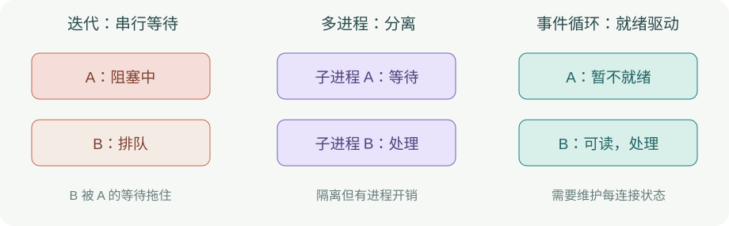
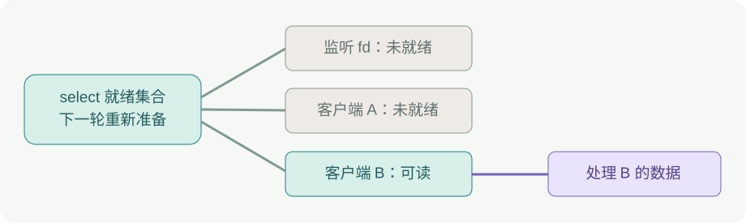

计算机系统 · 网络与并发 / 21
一个慢连接，为什么能拖住整个服务器？
迭代服务器的问题不是“没有 while 循环”，而是等待一个客户端时不能及时处理另一个客户端。我们用进程隔离、CGI 标准接口和 I/O 就绪通知三种视角，拆开“并发”背后的成本与边界。
示例以 Unix/Linux 与 HTTP/1.1 为语境；CGI 是历史上重要的接口，不应直接等同于当前的应用服务器部署规范。
21.1 三种处理方式：让等待不再串行传播
迭代服务器在处理 A 的阻塞读取期间，通常无法及时服务 B；fork-per-client 为每个连接创建子进程，能够把处理逻辑隔离开；一个事件循环则在多个 fd 中等待就绪事件，只处理当前可推进的操作。并发不代表没有等待，而是等待的组织方式不同。

| 模型 | 并发单位 | 优势 | 需要付出的代价 |
|---|---|---|---|
| 迭代服务器 | 逐个连接 | 逻辑简单，便于验证 | 慢请求拖延后续请求 |
| 每连接 fork | 子进程 | 地址空间隔离，易理解 | 进程创建、内存与回收成本 |
| 事件循环 | 就绪 fd / 状态机 | 一个线程可管理多条连接 | 状态与缓冲区管理更复杂 |
“有上千连接”并不意味着始终有上千连接在消耗 CPU：大多数连接可能只是等待。另一方面，事件循环里执行一个耗时的 CPU 任务，同样会卡住其他连接，因此也可能需要工作线程或进程池。
21.2 fork-per-client：描述符继承容易，生命周期管理更难
fork() 后子进程会继承描述符，它们指向继承自父进程的打开文件描述。典型做法是子进程关闭监听 fd、处理连接后关闭 connfd；父进程立即关闭 connfd 并继续接受连接。这里的 close 只减少引用，并不会直接关闭另一进程仍持有的副本。
/* fork-per-client 核心流程示意；省略完整监听创建 */
for (;;) {
int connfd = accept(listenfd, NULL, NULL);
if (connfd < 0) {
if (errno == EINTR) continue;
/* 记录错误并按策略处理；不要使用无效 fd */
break;
}
pid_t pid = fork();
if (pid == 0) {
close(listenfd);
serve_one_client(connfd);
close(connfd);
_exit(0);
}
close(connfd); /* 父进程必须关闭自己的副本 */
if (pid < 0) { /* fork 失败需降载/记录 */ }
}
/* 父进程还必须安排子进程回收 */成功退出但未被回收的子进程可能成为僵尸进程。父进程需要以 waitpid() 回收，典型方式包括主循环内处理子进程退出，或安全地配合 SIGCHLD 通知处理。信号处理例程应遵守异步信号安全规则；不要在其中随意调用 printf()、内存分配和复杂应用逻辑。
实际创建成本依内核、内存映射、页表、负载和缓存情况而变。为每个连接启动一个进程是否合适，要通过真实工作负载和资源限制验证，而不是宣称 fork 永远需要多少毫秒。
21.3 CGI：Web 服务器与子程序之间的明确边界
CGI/1.1 规定：Web 服务器把请求有关的信息放进环境变量（如 REQUEST_METHOD、QUERY_STRING、CONTENT_LENGTH），必要时把请求正文通过标准输入提供给 CGI 程序；程序把CGI 响应头和正文写到标准输出。服务器再解释这些输出并负责形成面向客户端的 HTTP 响应。
因此“把 CGI stdout 直接当成完整 HTTP 响应写进 socket”只可能是某些教学服务器特定的简化，不符合通用 CGI 接口的职责划分。CGI 输出通常以 Content-Type 等字段开始，不需要由脚本自行打印 HTTP 状态行。
#include <stdio.h>
/* 最小 CGI 程序：输出固定 HTML；由 Web 服务器托管执行 */
int main(void) {
puts("Content-Type: text/html; charset=UTF-8\r");
puts("");
puts("<!doctype html><html lang='en'><body><h1>Hello CGI</h1></body></html>");
return 0;
}可以用 cc -std=c11 -Wall -Wextra cgi.c -o cgi && ./cgi 检查原始输出，再由正确配置的 CGI 服务器运行。安全边界：不能把未经 HTML 转义的 QUERY_STRING 直接放到页面；需要限制环境变量与请求体大小、隔离执行权限、处理错误与超时。CGI 程序不是“用户发来什么命令就执行什么命令”。
21.4 select() 只告诉你“可以尝试”，不是“完整消息已到达”
使用 select 时，把要监控的 fd 放入 fd_set，传入最大 fd 加一作为 nfds。调用成功后，集合只标记当前就绪的 fd。每次调用前都需要重新准备集合；就绪只表示对某种 I/O 操作而言当前不会按通常方式阻塞，不保证一次读出完整应用消息，也不保证一次写完全部数据。

动一动：连接多，并不代表都能读
这是“就绪集合”的直觉练习，不是 QPS 性能模型；真实程序还需要关心 fd 的具体数值、可写事件及公平性。
下面用两个匿名管道演示一次真实的 select；只向 B 写入一个字节，预期仅 B 的读端可读。程序可以独立编译，不需要打开网络端口。
#define _POSIX_C_SOURCE 200809L
#include <stdio.h>
#include <sys/select.h>
#include <unistd.h>
int main(void) {
int a[2], b[2];
if (pipe(a) < 0) { perror("pipe a"); return 1; }
if (pipe(b) < 0) { perror("pipe b"); return 1; }
if (write(b[1], "X", 1) != 1) { perror("write"); return 1; }
fd_set reads;
FD_ZERO(&reads);
FD_SET(a[0], &reads);
FD_SET(b[0], &reads);
int high = a[0] > b[0] ? a[0] : b[0];
int count = select(high + 1, &reads, NULL, NULL, NULL);
if (count < 0) { perror("select"); return 1; }
printf("a ready: %d, b ready: %d\n",
FD_ISSET(a[0], &reads) != 0,
FD_ISSET(b[0], &reads) != 0);
close(a[0]); close(a[1]); close(b[0]); close(b[1]);
return 0;
}运行 cc -std=c11 -Wall -Wextra -pedantic select-demo.c -o select-demo && ./select-demo，预期输出 a ready: 0, b ready: 1。这个小实验不等于完整服务器：对非阻塞 socket，还必须处理 EAGAIN、部分写入、断开与状态机。
在 Linux 的 fd_set 接口里，FD_SETSIZE 通常为 1024，监视超出范围的 fd 有未定义行为风险。select 每次复制/扫描集合；poll 与 Linux 的 epoll 可缓解部分限制，但“epoll 永远 O(1)”也是过度简化：处理就绪事件本身至少与事件数量相关，实际成本还取决于应用工作量。
21.5 用证据排查连接拒绝、卡住与端口占用
# Linux：观察监听端口和 TCP 连接
ss -ltnp
ss -tan state time-wait
# 查看回环接口上 8080 端口的数据包
sudo tcpdump -i lo -nn port 8080
# 跟踪程序网络系统调用及其返回值
strace -e trace=network ./serverss 查看套接字状态，tcpdump 观察线上包，strace 观察用户进程系统调用。别把三种视角混作一种证据：包到了网卡，不保证应用已 read；connect 失败也不能仅凭状态名推断防火墙是唯一原因。
TIME_WAIT 是 TCP 连接关闭过程中的正常状态，但不能据此直接断定新监听失败必然由它引起。SO_REUSEADDR 对地址复用有条件限制，不能抢占仍在使用的任意地址/端口组合。调查 EADDRINUSE 时先检查当前监听者和绑定的地址范围。
21.6 自测：就绪是不是等于已完成？
对客户端 B 的 fd，select 返回“可读”。随后一次 read 返回 0。该把这次事件解释成收到一条空的业务消息，还是连接状态变化？对于 read 返回正数但消息未读完又怎么办？
查看推导
流式 TCP 上 read 返回 0 一般表示对端已进行有序关闭；应按协议与状态机处理并释放资源，而非自动构造空消息。正数短读则累计数据，等待其余部分满足分帧条件后再交给解析器。
资料与边界
RFC 3875（CGI/1.1） 规定服务器/脚本的职责；select(2) 与 epoll(7) 描述事件通知；waitpid(2) 解释子进程回收。下一章将把共享状态与线程同步加入并发模型。
技术深描 · 21 / TRACE
可读事件来了，却 read() == 0：这究竟是错误还是正常？
一个事件循环并不是一遍遍猜“谁可能有数据”，而是等待内核报告哪些文件描述符有值得尝试的操作。但“可读”只说明这次可以试着读，并不承诺读到正数，更不承诺已经收到整个 HTTP 请求。对于一个写端已经关闭、读端无剩余数据的管道，poll 可报告读端有可处理事件，随后的 read 返回 0 —— 这是预期的 EOF。
| 事件循环观察 | 下一步 | 原因 |
|---|---|---|
可读 + n > 0 | 追加输入缓冲，尽可能解析完整记录 | 不假设一次读完成记录 |
可读 + n == 0 | 处理输入方向 EOF；可能需要先送完回应再关闭 | TCP 半关闭时读 EOF 不等于写侧必须立刻关闭 |
读/写返回 EAGAIN | 保留状态并等待后续就绪 | 竞态或非阻塞缓冲状态可能变化 |
| 可写 + 部分成功 | 更新发送游标与剩余字节数 | 可写也不保证完整发送 |
因此应当把每条连接建模为显式状态机，例如 READ_HEADER → READ_BODY → PROCESS → WRITE_PENDING → CLOSE，并分别保存输入长度、预期正文长度、输出游标、超时预算。CPU 密集任务不应直接长时间霸占事件循环；移交工作线程也需明确连接状态与缓冲区的所有权。
cc -std=c11 -Wall -Wextra -Werror -pedantic -pthread examples/deep-ch19-23.c -o /tmp/deep-io
/tmp/deep-io readiness
python3 examples/deep-ch19-23-models.py 21C 程序使用 poll 观察已关闭写端的管道，随后确认 read=0。这是一项可复现的 POSIX 就绪实验，并非真实 HTTP 服务器的性能测试。依据 poll(2)、epoll(7)；继续参考 第 28 章的非阻塞写与连接所有权。
技术深描 · 21 / 触发模式
LT 与 ET：为什么边沿触发时必须读到 EAGAIN？
“可读”的报告方式取决于触发模式。水平触发（level-triggered，LT）下，只要 fd 仍然可读，下一次 poll/epoll_wait 还会报告它，因此回调即使每次只读一块，也能靠多次唤醒逐步取完。边沿触发（edge-triggered，ET）下，事件只在状态发生转变时产生一次；回调若只读了一部分就返回，剩下的数据不会再次触发事件，从而被长期遗留。
| 模式 | 未取完时是否再次报告 | 正确策略 |
|---|---|---|
| 水平触发 LT | 会（只要仍可读） | 每次事件读一块也可以，但应设预算避免饿死其他连接 |
| 边沿触发 ET | 不会 | 在本次回调中循环读写，直到返回 EAGAIN |
取“10 字节待读、每次最多读 3 字节”：LT 依次在三次唤醒中读满 10；ET 若只读 3 字节就返回，会遗留 7 字节且不再收到事件；只有在本次回调里循环读到 EAGAIN，才能读满 10。无论哪种模式，都要保存输入缓冲、输出游标与关闭状态，避免忙等或丢字节。
python3 examples/deep-ch19-23-b.py 21b模型用三个函数分别表示“LT 多次唤醒”“ET 只读一块”和“ET 读到 EAGAIN”，断言只有最后一种能在一次事件内取完。它不依赖真实内核的 epoll 边界行为；具体语义以 epoll(7) 为准。公平读取预算、工作线程移交与连接所有权仍需在真实程序里单独设计，本节不把它们混同为通知模式。